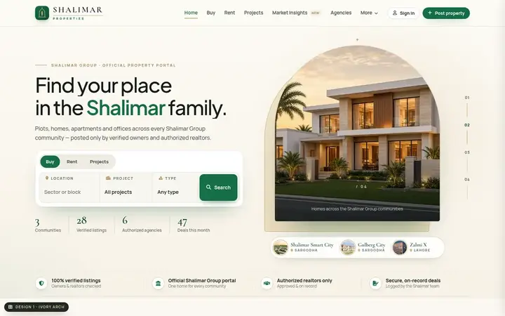
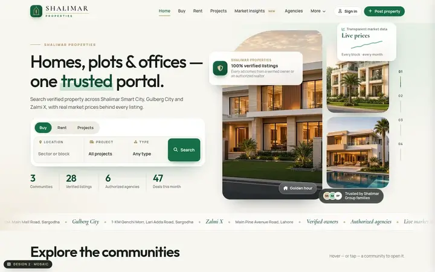
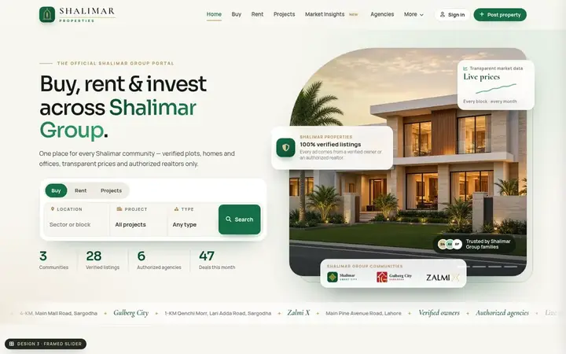
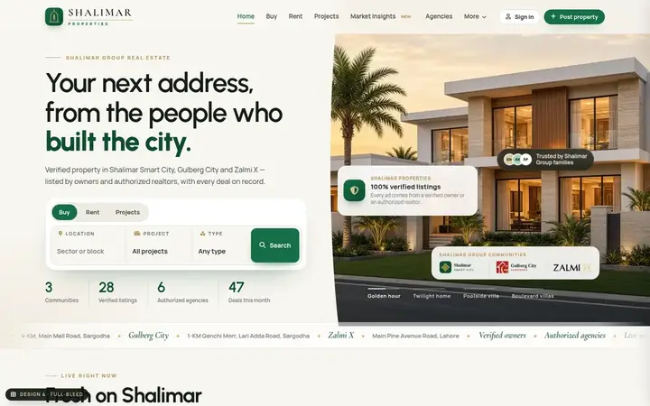
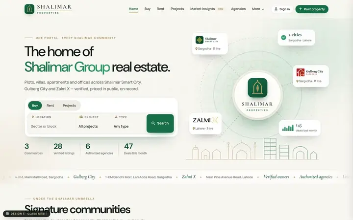
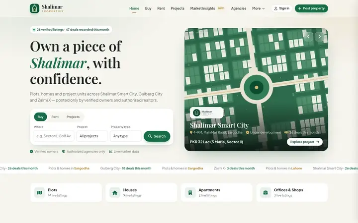

Six directions for Shalimar Properties.
Each option is a complete, working demo — home page plus buy, rent, projects, insights, agencies, blog, events, wanted, calculator, listing, post-property and admin. Open one, click around, and use the “Design” chip at the bottom-left to come back here.

Design 1Ivory Arch LatestWarm ivory and gold — villa slider in an offset arch, compact project pills, editorial community chapters.
Open design →
Design 2MosaicThree offset photo frames with mask reveals, expanding community panels and a public price chart.
Open design →
Design 3Framed SliderA framed four-villa slider with brand cards, tall community cards and a dark stories wall.
Open design →
Design 4Full-bleedA full-height villa slider with a curved edge, listings first, and an editorial list of communities.
Open design →
Design 5Glass OrbitThe Shalimar mark with the three communities orbiting it, a project spotlight and glass-style cards.
Open design →
Design 6ClassicThe earlier site in a clean, classic portal layout with an illustrated project carousel.
Open design →